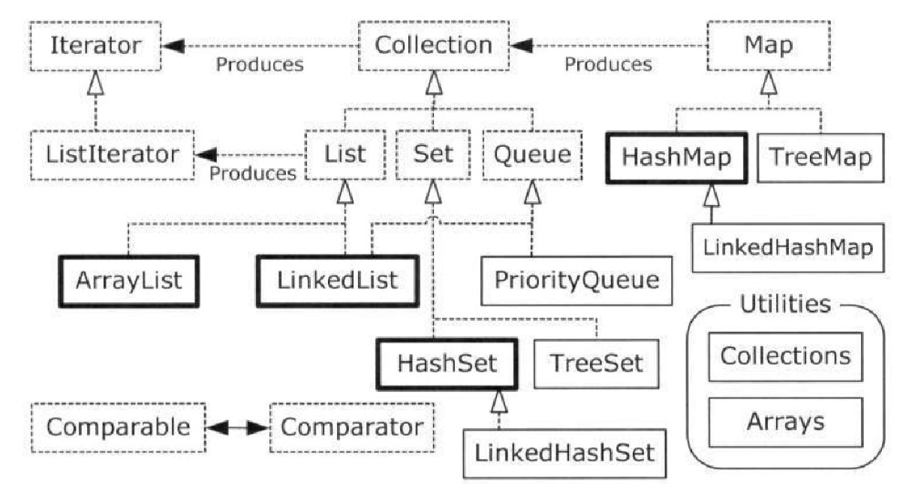

gianluca.aguzzi@unibo.itangelo.filaseta@unibo.itQuesto materiale è ampiamente basato su quello realizzato dai Prof. Mirko Viroli e Roberto Casadei, che ringrazio.
Ogni errore riscontratovi è esclusiva responsabilità degli autori di questo documento.
A, chiamata outer è possibile innestare la definizione di un’altra classe B, chiamata innestata (statica) – in inglese, static nestedB viene quindi vista come se fosse una proprietà statica di A (richiamabile via A, come: tipo, per le new e le chiamate statiche)// situazione di partenza
class A {...}
class B {...}
// modifica, usando le inner class
class A {
...
static class B { .. }
}
OuterOuter.A, Outer.B, Outer.I, Outer.A.Cclass Outer {
...
static class A { ... static class C { ... } ... }
static class B { ... }
interface I { ... } // static è implicito
}
Outer.StaticNested (ovvero, come se fosse un membro della classe)Outer si può accedere anche direttamente con StaticNestedOuter di StaticNested segue le regole del suo modificatore d’accessoprivateclass Outer {
...
static class StaticNested {
...
}
}
..
Outer.StaticNested obj = new Outer.StaticNested(...);
Vi sono situazioni in cui per risolvere un singolo problema è opportuno generare più classi, e non si vuole affiancarle solo come classi dello stesso package
privateCounter, Counter.Bidirectional, Counter.MultiUn sintomo della possibilità di usare le classi nested per questo caso è quando ci si trova a costruire classi diverse costuite da un nome composto con una parte comune (Counter, BiCounter, MultiCounter)
Counter e specializzazioni innestate (1/2)public class Counter {
private int value; // o protected..
public Counter(int initialValue) {
this.value = initialValue;
}
public void increment() {
this.value++;
}
public int getValue() {
return this.value;
}
public static class Multi extends Counter {
... // solito codice
}
public static class Bidirectional extends Counter {
... // solito codice
}
}
Counter e specializzazioni innestate (2/2)public class Counter {
...
// Codice della classe senza modifiche..
public static class Multi extends Counter {
public Multi(int initialValue) {
super(initialValue);
}
public void multiIncrement(int n) {
for (int i = 0; i < n; i++) {
this.increment();
}
}
}...
public static class Bidirectional extends Counter{
... // solito codice
}
}
Counter e specializzazioni innestatepublic class UseCounter {
public static void main(String[] args) {
final List<Counter> list = new ArrayList<>();
list.add(new Counter(100));
list.add(new Counter.Bidirectional(100));
list.add(new Counter.Multi(100));
for (final Counter c : list){
c.increment();
}
}
}
In una classe potrebbero servire sotto-comportamenti che debbano:
Range, Range.IteratorIn tal caso spesso tale classe separata non deve essere visibile dall’esterno, quindi viene indicata come private
Range e suo iteratore (1/2)public class Range implements Iterable<Integer> {
final private int start;
final private int stop;
public Range(final int start, final int stop) {
this.start = start;
this.stop = stop;
}
public java.util.Iterator<Integer> iterator() {
return new Iterator(this.start, this.stop);
}
private static class Iterator
implements java.util.Iterator<Integer>{
...
}
}
Range e suo iteratore (2/2)public class Range implements Iterable<Integer> {
...
private static class Iterator
implements java.util.Iterator<Integer> {
private int current;
private final int stop;
public Iterator(final int start, final int stop) {
this.current = start;
this.stop = stop;
}
public Integer next() {
return this.current++;
}
public boolean hasNext() {
return this.current <= this.stop;
}
public void remove() { }
}
}
Rangepublic class UseRange {
public static void main(String[] s) {
for (final int i: new Range(5,12)) {
System.out.println(i);
// 5 6 7 8 9 10 11 12
}
}
}
Map, Map.EntryOuter.StaticNestedOuter e StaticNested sono co-locate: si vedono le proprietà privatepublicOut.C1, Out.C2,..private – è il caso più frequentejava.util.Map
Mappublic interface Map<K,V> {
// Query Operations
int size();
boolean isEmpty();
boolean containsKey(Object key); // usa Object.equals
boolean containsValue(Object value); // usa Object.equals
V get(Object key); // accesso a valore
// Modification Operations
V put(K key, V value); // inserimento chiave-valore
V remove(Object key); // rimozione chiave(-valore)
// Bulk Operations
void putAll(Map<? extends K, ? extends V> m);
void clear(); // cancella tutti
// Views
Set<K> keySet(); // set di chiavi
Collection<V> values(); // collezione di valori
Set<Map.Entry<K, V>> entrySet(); // set di chiavi-valore
interface Entry<K,V> {...} // public static implicito!
}
Map.EntryMap.EntryMap.EntryMap.Entrypublic interface Map<K,V> {
...
Set<Map.Entry<K, V>> entrySet();
interface Entry<K,V> { // public e static implicite!
K getKey();
V getValue();
V setValue(V value);
}
}
Map.Entrypublic class UseMap2 {
public static void main(String[] args) {
// Al solito, uso una incarnazione, ma poi lavoro sull'interfaccia
final Map<Integer, String> map = new HashMap<>();
// Una mappa è una funzione discreta
map.put(345211, "Bianchi");
map.put(345122, "Rossi");
map.put(243001, "Verdi");
for (final Map.Entry<Integer, String> entry : map.entrySet()) {
System.out.println(entry.getClass());
System.out.println(entry.getKey());
System.out.println(entry.getValue());
entry.setValue(entry.getValue()+"...");
}
System.out.println(map);
// {345211=null, 243001=null, 345122=null}
}
}
AbstractMapAbstractSetentrySet()AbstractMappublic class CapitalsMap extends AbstractMap<String,String>{
private static final Set<Map.Entry<String,String>> set;
// inizializzatore statico..
// usato per inizializzare i campi statici
static{
// costruisce il valore di set
set = new HashSet<>();
set.add(new AbstractMap.SimpleEntry<>("Italy","Rome"));
set.add(new AbstractMap.SimpleEntry<>("France","Paris"));
set.add(new AbstractMap.SimpleEntry<>("Germany","Berlin"));
}
public CapitalsMap(){}
// Questo è l'unico metodo che è necessario implementare
public Set<java.util.Map.Entry<String, String>> entrySet() {
return set;
}
}
UseCapitalsMappublic class UseCapitalsMap {
public static void main(String[] args){
CapitalsMap cmap = new CapitalsMap();
System.out.println("Capital of Italy: "+cmap.get("Italy"));
System.out.println("Capital of Spain: "+cmap.get("Spain"));
System.out.println("All CapitalsMap: "+cmap);
// Iterazione "lenta" su una mappa
for (final String key: cmap.keySet()){
System.out.println("K,V: "+key+" "+cmap.get(key));
}
// Iterazione veloce su una mappa
for (final Map.Entry<String, String> entry: cmap.entrySet()){
System.out.println("E: "+entry+" "+entry.getKey()+" "+entry.getValue());
}
}
}
Outer, è possibile innestare la definizione di un’altra classe InnerClass, senza indicazione static!InnerClass è vista come se fosse una proprietà non-statica di Outer al pari di altri campi o metodiInnerClass ha sempre un riferimento ad una istanza di Outer (enclosing instance) che ne rappresenta il contesto, accessibile con la sintassi Outer.this, e ai suoi campi (privati)class Outer {
...
class InnerClass { // Nota.. non è static!
...
// ogni oggetto di InnerClass avrà un riferimento ad
// un oggetto di Outer, denominato Outer.this
}
}
public class Outer {
private int i;
public Outer(int i) {
this.i=i;
}
public Inner createInner() {
return new Inner();
// oppure: return this.new Inner();
}
public class Inner {
private int j = 0;
public void update(){
// si usa l'oggetto di outer..
this.j = this.j + Outer.this.i;
}
public int getValue(){
return this.j;
}
}
}
Inner e Outerpublic class UseOuter {
public static void main(String[] args) {
Outer o = new Outer(5);
Outer.Inner in = o.new Inner();
System.out.println(in.getValue()); // 0
in.update();
in.update();
System.out.println(in.getValue()); // 5
Outer.Inner in2 = new Outer(10).createInner();
in2.update();
in2.update();
System.out.println(in2.getValue()); // 20
}
}
<obj-outer>.new <classe-inner>(<args>)<obj-outer> è omettibile quando sarebbe this)<classe-outer>.thisprivateRange già vista usa una static nested class, che però ben usufruirebbe del riferimento all’oggetto di Range che l’ha generataRangepublic class Range2 implements Iterable<Integer> {
private final int start;
private final int stop;
public Range2(final int start, final int stop) {
this.start = start;
this.stop = stop;
}
public java.util.Iterator<Integer> iterator() {
return this.new Iterator();
}
private class Iterator implements java.util.Iterator<Integer> {
private int current;
public Iterator() {
this.current = Range2.this.start; // this.current = start
}
public Integer next() {
return this.current++;
}
public boolean hasNext() {
return this.current <= Range2.this.stop;
}
public void remove() { }
}
}
Outer, è possibile innestare la definizione di un’altra classe LocalClass LocalClass è a tutti gli effetti una inner class (e quindi ha enclosing instance)LocalClass “vede” anche le variabili nello scope del metodo in cui è definita, usabili solo se final, o se “di fatto finali”class Outer {
// ...
void m(final int x){
final String s = /* ... */;
class LocalClass { // Nota.. non è static!
// ... può usare Outer.this, s e x
}
LocalClass c = new LocalClass(...);
}
}
Range tramite classe localepublic class Range3 implements Iterable<Integer> {
private final int start;
private final int stop;
public Range3(final int start, final int stop) {
this.start = start;
this.stop = stop;
}
public java.util.Iterator<Integer> iterator() {
class Iterator implements java.util.Iterator<Integer> {
private int current;
public Iterator() {
this.current = Range3.this.start;
}
public Integer next() {
return this.current++;
}
public boolean hasNext() {
return this.current <= Range3.this.stop;
}
public void remove() { }
}
return new Iterator();
}
}
new, è possibile innestare la definizione di un’altra classe senza indicarne il nome
class C {
// ...
Object m(final int x) {
return new Object() {
public String toString() { return "Valgo " + x; }
}
}
}
Range tramite classe anonima – la soluzione ottimalepublic class Range4 implements Iterable<Integer> {
private final int start;
private final int stop;
public Range4(final int start, final int stop) {
this.start = start;
this.stop = stop;
}
public java.util.Iterator<Integer> iterator() {
return new java.util.Iterator<Integer>() {
// Non ci può essere costruttore!
private int current = start; // o anche Range4.this.start
public Integer next() {
return this.current++;
}
public boolean hasNext() {
return this.current <= stop; // o anche Range4.this.stop
}
public void remove() { }
}; // questo è il ; del return!!
}
}
Comparablepublic class UseSort {
public static void main(String[] args) {
final List<Integer> list = Arrays.asList(10, 40, 7, 57, 13, 19, 21, 35);
System.out.println(list);
// classe anonima a partire da una interfaccia
Collections.sort(list, new Comparator<Integer>() {
public int compare(Integer a, Integer b) {
return Integer.compare(a, b);
}
});
System.out.println(list);
Collections.sort(list, new Comparator<Integer>() {
public int compare(Integer a, Integer b) {
return Integer.compare(b, a);
}
});
System.out.println(list);
}
}
Utili quando si vuole isolare un sotto-comportamento in una classe a sé, senza dichiararne una nuova che si affianchi alla lista di quelle fornite dal package, ma stia “dentro” una classe più importante